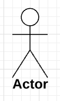
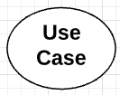
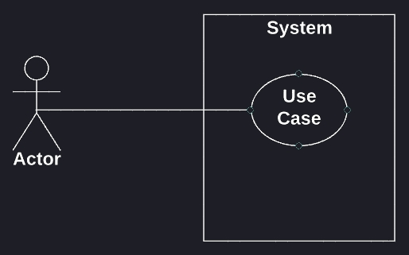
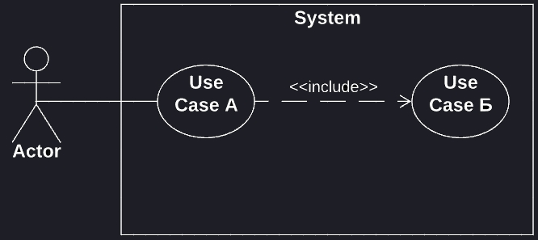
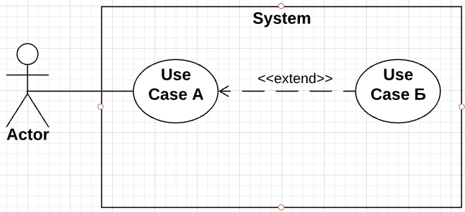
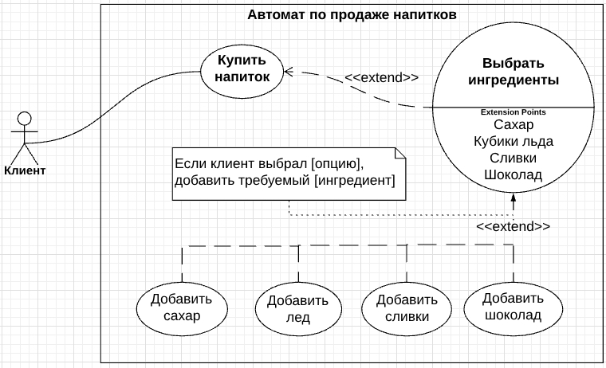

Зачем нужен UML
Каждая компьютерная программа создается с определенной целью.
В общем случае, есть заказчики - люди, которым требуется некая программа для личного использования, и разработчики - люди, которые эти программы для них пишут.
Процесс создания типичной программы делится на два этапа - проектирование и разработка.
Проектирование - это процесс планирования, отвечает на вопросы: каковы наши цели - зачем мы делаем данную программу? Как мы реализуем поставленные задачи? Как программа будет работать?
Проектирование позволяет достичь понимания между пожеланиями заказчика и тем, как это представляет себе непосредственно разработчик.
Так, заказчик может сразу же представить себе, какой окажется его будущая программа (и сразу внести необходимые правки), а разработчику позволяет выделить и сконцентрироваться на выполнении приоритетных задач, минимизировав количество необходимых доработок в дальнейшем.
При этом становится очевидно, что при отсутствии подобного предварительного проектирования, количество разногласий между заказчиком и разработчиком будет неустанно расти уже с самого начала.
А к чему это приведет? К потери времени - из-за постоянных правок, когда заказчик регулярно требует сделать не так, а эдак, что-то изменить. К потери финансов - ввиду недопонимания между тем, что уже сделал разработчик (люди работали-старались, а оказывается зря), и тем, каким это себе представлял заказчик.
А потому, никогда не следует пренебрегать проектированием, пусть даже речь идет о самом маленьком одностраничном веб-сайте.
Но с чего начинать проектирование? Во-первых, существует множество различных подходов к проектированию. Каждый такой подход может иметь как преимущества, так и недостатки перед другими. В зависимости от конкретной программы, сложности ее реализации, могут быть использованы те или иные подходы. И одним из таких подходов, является проектирование при помощи UML.
Как работать с UML
Во-первых, следует сказать, что в результате процесса проектирования будущей программы получают ее информационную модель.
Информационная модель, в свою очередь, это подробное описание различных аспектов функционирования программы. Это своего рода структурированная информация, которая описывает, что вообще из себя представляет конкретная программа и как она работает.
Если говорить конкретно о UML, то здесь информационная модель выражается в виде совокупности различных диаграмм, которые необходимо создать. Для этой цели в UML имеется ряд правил, следуя которым можно создавать различные виды диаграмм. При этом, нужно отметить, что каждая отдельная диаграмма описывает будущую программу с определенной стороны.
Вся идея UML как раз и состоит в том, что совокупность этих диаграмм как раз и будет являться информационной моделью будущей программы.
UML - это графический язык моделирования, который имеет стандарт и спецификацию. Специально для проектирования на UML, разработаны множество прикладных решений, и основное их различие состоит в том, что одни из них - это просто программы для рисования диаграмм с соответствующим набором инструментов (почти что тот же Paint, только ориентированный на рисование диаграмм), а другие являются профессиональными решениями, в полной мере поддерживающими спецификацию UML.
Соответственно, диаграммы созданные в paint-подобных программах являются не более, чем обычными картинками, в то время как диаграммы в профессиональных программах являются помимо прочего еще и семантически корректными, то есть несут не только визуальный смысл, но и адекватно соотносятся со спецификацией.
Диаграмма Use Case
- - для определения функциональных требований (зачем вообще нужна программа)
- - чтобы посмотреть на систему в целом
- - чтобы выделить внешние и внутренние факторы, взаимодействующие с системой каким-либо образом
-
Обозначения Use Case диаграммы
Система - то, что собственно разрабатывается - это может быть как сама программа в целом, так и ее отдельная часть, а возможно даже описание некоторого процесса - например процесса, описывающего процедуру взаимодействия с ней пользователя.
Символьное обозначение:

При этом название системы указывается внутри элемента сверху.
Актер - некто или нечто, что взаимодействует с нашей системой. Это может быть человек, другая система, техническое устройство, организация (третьи лица).
Символьное обозначение:
При этом под иконкой указывается также имя актера. Кроме того, об актерах следует думать и воспринимать их как категории, а не как отдельных представителей, а также всегда располагать за пределами системы, поскольку они являются внешними элементами.
Следует отметить и то, что актеры, которые используют систему для достижения собственных целей, называются основными и поэтому располагаются слева от элемента Системы. В то же время, актеры, которых уже система использует для достижения целей других актеров, называются второстепенными, и располагаются справа от элемента Системы.
Прецедент - это какое-то действие, которое выполняет некоторую задачу в системе (поэтому на диаграмме всегда располагается внутри нее).
Символьное обозначение:
При этом внутри прецедента в глагольной форме указывается действие, которое он характеризует. Прецеденты должны, по возможности, располагаться в логической последовательности по направлению сверху-вниз внутри Системы.
Отношения - это определенные связи между актерами и прецедентами. Поскольку каждый актер использует систему для того, чтобы получить некий результат, он должен осуществить взаимодействие по-крайней мере с одним прецедентом. И осуществляется это взаимодействие через механизм отношений.
Всего существует 4 типа отношений.
Отношение Assoсiation (отношение ассоциации)
Символьное обозначение:
Характеризует простейшее взаимодействие между актером и прецедентом.
Отношение Include (отношение включения)
Символьное обозначение: (по направлению от родительского элемента к дочернему)
Используется в тех случаях, когда нужно показать, что прецедент "А" выполнится только тогда, когда выполнится включенный в него прецедент "Б".
Отношение Extend (отношение расширения)
Символьное обозначение: (по направлению от дочернего элемента к родительскому)
Используется в тех случаях, когда нужно показать, что прецедент "А" выполняется всегда, а вот расширенный прецедент "Б" может как выполнится, так и не выполнится в зависимости от некоторых условий.
Отношение Generalization (отношение обобщения)
Символьное обозначение: (по направлению от дочернего элемента к родительскому)

Используется в том случае, когда нужно определенным образом детализировать поведение актера или прецедента.
При этом каждый дочерний прецедент разделяет общее поведение с родительским, однако добавляет некоторые детали.
Прецедент с точками расширения - это все тот же обычный use case, только на нем дополнительно указываются т.н. точки расширения ниже названия под горизонтальной чертой. Эти точки расширения предназначены для того, чтобы представить отношение extend более детально, и выглядит это следующим образом.
При этом следует добавить вспомогательную подсказку (стандартно - прямоугольникк с завернутым уголком).
-
Задачи
Задача 1
Актор User взаимодействует с системой OnlineTranslator в рамках варианта использования (он же use case, он же прецедент) Translate. Варианты использования TranslateText и TranslateWebPage уточняют Translate. Отобразите на диаграмме.
а. Вариант использования TranslateWebPage включает «include» вариант использования SetURL.
б. Вариант использования SetLanguages расширяет «extend» вариант использования Translate в точке расширения specifyLaguages. Условие расширения «язык не определен автоматически».
в. Добавьте в модель актора ExperiencedUser, уточняющего User. ExperiencedUser может взаимодействовать с системой в рамках варианта использования ProposeTranslation, который уточняет вариант использования TranslateText.
Задача 2
Автор Author направляет статью SendPaper редактору журнала Editor. Редактор передает статью на рецензирование Review нескольким рецензентам Reviewer. Затем редактор возвращает отзывы рецензентов автору в том же варианте использования SendPaper.
а. Добавьте возможность автору вместе с корректором ProofReader подготовить статью к публикации PrepareForPublishing.
б. Доработайте модель, укажите, что подготовка статьи к публикации выполняется, только если она была одобрена редактором в варианте использования SendPaper.
Задача 3
Распознавателю текста OCR от модуля морфологии нужны возможность определить, принадлежит ли слово языку, и функция приведения слова к заданной форме, в частности, восстановления начальной формы. Также нужна функция получения грамматического значения конкретного слова
а. Постройте модель модуля, выделите акторов, варианты использования и укажите отношения между ними.
б. Добавьте функцию вывода слов, похожих на введенное, если его нет в словаре языка. Каким образом данная возможность системы связана с другими функциями?
в. Укажите в модели, что все перечисленные задачи подразумевают выполнение поиска слова (или его основы) в словаре.
г. Некоторые языки могут не поддерживаться системой. Перед выполнением любой функции модуля морфологии нужно проверить, поддержан ли язык. Отобразите это в модели.
Здесь и далее, вместо определения программа будет использоваться термин система, как более всеобъемлющий и соотвествующий спецификации UML.
При создании информационной модели системы важным является показать, каково ее поведение в динамике (то есть как она себя ведет) в процессе того как она выполняется.
Диаграмма Use Case - одна из 5ти диаграмм, предназначенных в UML для описания такого динамического поведения системы.
Поскольку речь идет о динамическом поведении системы, должны существовать некие внутренние или внешние факторы, которые бы запускали определенные взаимодействия между собой и собственно системой.
Эти внутренние и внешние факторы называются actors (рус. актерами). Вообще, диаграмма Use Case состоит из, собственно, актеров, прецедентов (use case) и отношений (relationships).
Если взять отдельную Use Case диаграмму, то она описывает определенную функциональную особенность системы. Соответственно, чтобы описать всю систему, может потребоваться создать ряд Use Case диаграмм.
- Вкратце, зачем использовать диаграмму Use Case:
Hints!
---
---